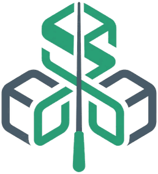
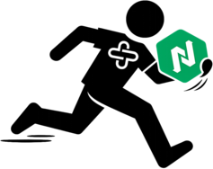
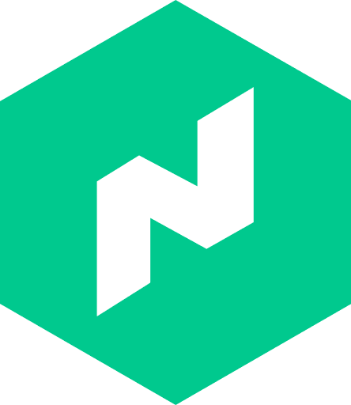
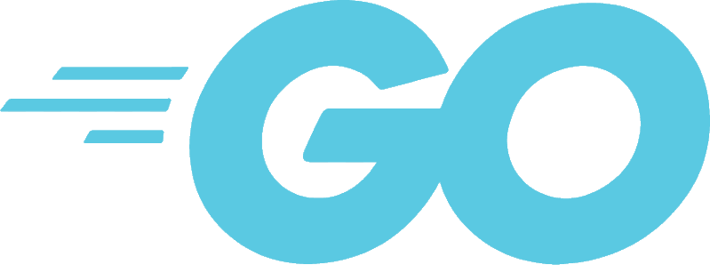

- Cloud & Platforms
- AWS, GCP, Oracle Cloud, Proxmox, Cloudflare
- IaC & Config Mgmt
- Terraform, Terragrunt, Chef, Puppet, Ansible, CDKTF
- CI/CD & Tooling
- Jenkins, GitLab CI, GitHub Actions, Groovy, Docker, SonarQube, golangci-lint, govulncheck, goreleaser
- Orchestration
- Kubernetes, Nomad, Consul, Temporal
- Observability
- Prometheus, Grafana, Loki, Tempo, OpenTelemetry, Alloy, Alertmanager, ELK Stack
- Networking & Runtime
- WireGuard, Traefik, HAProxy, keepalived, OpenVPN, gRPC, REST
- Datastores
- PostgreSQL, MySQL, Redis, MongoDB, SQLite, Patroni, sqlc, goose
- Languages
- Go, Python, Ruby, Bash, C, SQL, HCL, YAML
- Security & Secrets
- Vault (PKI, Transit, SSH CA), oauth2-proxy, authentik, mTLS, ACME / Let's Encrypt, SigV4, cosign, SOC 2
- Distributed Systems
- Saga / compensation, circuit breakers, rate limiting, multi-cloud replication, HA / failover
Alex Freidah
Senior Infrastructure / Platform Engineer · DevOps · Cloud · CI/CD
Professional Summary
Senior Infrastructure / Platform Engineer with 15+ years designing, automating, and operating production-grade systems across cloud and bare-metal. Deep expertise in the HashiCorp stack (Nomad, Consul, Vault/OpenBao), infrastructure-as-code with Terraform and Terragrunt, and Go-based service writing including things such as multi-cloud storage/routing, certificate automation, admission control systems, database tooling, and Temporal-driven workflows. Proven track record delivering secure, observable platforms: SOC 2 compliance, organization-wide CI/CD, multi-region architectures, and full-stack observability with Prometheus, Grafana, Loki, Tempo, and OpenTelemetry. Builds and operates a production-grade homelab entirely as code - a Nomad/Consul/Vault cluster, HA PostgreSQL, and custom Go microservices across bare-metal and cloud.
Skills
Professional Experience
CommerceSenior Infrastructure Engineer
- Building Go-based infrastructure tooling for automated certificate management, database migrations, and workload scheduling optimizations.
- Enhancing observability with Prometheus metrics for database replication monitoring and performance caching in distributed systems.
- Supporting infrastructure automation and service orchestration using Puppet, Nomad, Consul, and Vault.
EDO, Inc.Senior Infrastructure Engineer
- Architected a multi-AZ OpenBao (Vault) cluster with automatic unsealing and dynamic clustering, enhancing security and efficiency.
- Architected and implemented a multi-region OpenVPN cluster connecting three U.S. offices and remote personnel (including contractors in the Philippines), ensuring secure and reliable cross-continental communication.
- Authored Jenkins Groovy libraries and self-service pipeline proposals, automating container builds and Terraform deployments supporting 20+ developers.
- Led SOC 2 compliance initiative for data protection and user access control, resulting in certification.
- Developed SonarQube infrastructure and integrated it into GitOps workflows, enabling quality and security scanning for 20+ projects.
- Engineered AWS infrastructure across 15+ services with Terraform/Terragrunt; modernized and created CI/CD workflows for 20+ pipelines with linting, testing, and cost analysis.
- Built a Python Snowpark program using async processing, in-memory caching, and thread-pool multithreading, reducing a 12-hour process to ~5 hours with a 100% success rate.
OptoroDevOps to Senior DevOps Engineer
- Owned PostgreSQL lifecycle across AWS, Kubernetes, and Joyent SDC with near-zero downtime over 7 years supporting 22 critical microservices.
- Programmed SOC 2 compliance tooling in Go, enabling audit readiness for 22 microservices through dynamic backup and security monitoring.
- Automated provisioning of 200 nationwide shipping stations using Clonezilla PXE and custom scripts, enhancing scalability and consistency.
- Designed and managed CI/CD pipelines via Jenkins and GitLab CI for 4+ data stores and infrastructure services, improving deployment reliability.
- Implemented observability stack with Prometheus, Grafana, ELK, Alertmanager, Nagios, and New Relic supporting monitoring of 1000+ services.
- Managed and maintained large-scale database fleets, monitoring, metrics, alerting, and logging across AWS, Joyent SDC, and GCP.
AOLData Warehouse Operations (DevOps)
- Enhanced data-processing visibility by 50% for AOL platforms including Huffington Post and TechCrunch by scripting Zenoss to monitor 3M+ daily ETL records.
- Improved analytics workload efficiency by 25% by overseeing ETL process monitoring on Ab Initio, Hadoop, Vertica, and Oracle systems handling millions of records daily.
- Presented Ruby testing techniques at 6 local meetups, enhancing community engagement and testing practices.
- Delivered 12 TDD and acceptance-testing presentations (Ruby/Cucumber), training 30+ team members at AOL’s Data Warehouse.
- Mentored an intern in a 2-week program, sharing data-warehouse operations knowledge and technical skills.
TMCI InternationalAnalyst / Developer
- Upheld United States Secret-level security clearance for 5 years.
- Promoted from analyst to sole developer/maintainer of TAD, a duplicate-detection and merge system for the TRICARE Clinical Data Repository (Oracle on HP-UX).
- Initiated automation of analyst workflows with VBA/browser integration, cutting manual effort to near zero and multiplying throughput.
- Built PL/SQL + rules-based matching pipelines that scaled merges from ~100k to millions annually, proactively cleaning patient records.
- Applied custom phonetic matching algorithms (Soundex, Phonex) in C# DLLs integrated with a VB5 engine, improving duplicate detection by ~5%.
- Built a multithreaded C/pthreads engine to parallelize massive SQL updates, adapting modern C to HP-UX compiler quirks and reducing processing time by ~50%.
- Exhibited rapid self-learning (C, C#, PL/SQL, VBA) and integrated them into production systems.
Key Achievements
- Increased VPN performance by ~50% with a multi-region setup.
- Ensured PostgreSQL uptime of ~99.9% over 7 years organization-wide.
- Optimized Python Snowpark ETL runtime by ~58%, eliminating OOM risks.
- Automated analyst workflows with VBA, reducing manual effort to near zero.
Solo Projects

S3 OrchestratorCombines multiple S3/blob storage backends
An S3-compatible proxy that unifies multiple object-storage providers behind a single endpoint.
- Stacks per-backend byte quotas into one logical bucket with automatic overflow routing
- Multi-cloud replication across providers at a configurable factor
- Operator primitives: online drain, rebalance, integrity scrub, and live failover
- Optional envelope encryption (AES-256-GCM via Vault Transit) so backends only ever see ciphertext
- SigV4 authentication with multi-bucket credential isolation and rate limiting
- Per-backend and per-database circuit breakers with degraded-mode reads on DB outage
- Multipart uploads and a durable cleanup queue with dead-letter handling
- Metadata layer in PostgreSQL or embedded SQLite (sqlc) tracking placement, replicas, and quotas
- Hot-reloadable backend and quota config; cosign-signed images and release checksums
- Web dashboard and admin API, with OpenTelemetry tracing and Prometheus metrics
MunchboxProduction-grade homelab on Nomad/Consul/Vault
A production-grade homelab infrastructure platform spanning on-prem bare-metal, Proxmox, and cloud nodes linked over WireGuard.
- Built on HashiCorp Nomad, Consul, and Vault
- Provisioned as code end to end: Terraform/Terragrunt for cloud and cluster config, Chef/Cinc cookbooks for node setup
- Vault as the security backbone: SSH CA, PKI mTLS for Nomad/Consul, Transit encryption, KV secrets, and Workload Identity
- Temporal server and UI running scheduled Go workflow workers for backups, ACME cert issuance, Trivy scanning, and cleanup
- Custom Go services: multi-cloud S3 orchestrator, a Cloudflare log collector, a Vault PKI certificate manager, and an Oracle free-tier node watchdog
- HA data tier: PostgreSQL (Patroni), Redis Sentinel, and HAProxy
- DNS, ACLs, secrets, and Postgres databases all declared in Terragrunt (Pi-hole + dnsdist, Cloudflare, Consul/Nomad ACLs)
- Every node runs CoreDNS that resolves .consul via the local Consul agent and round-robins all other queries to the Pi-holes
- Self-hosted dev infra: Forgejo with CI runners, private GitHub Actions runners, a Docker registry, and an aptly APT repository
- Full observability: Prometheus, Grafana, Loki, Tempo, and Alertmanager
- Dual HA ingress nodes, each running the full stack (Traefik, keepalived, oauth2-proxy, cloudflared tunnel), so a keepalived VIP failover lands on a complete ingress path
Cloudflare Log CollectorCollects zone analytics and audit logs
Collects Cloudflare zone analytics and account audit logs and ships them into an observability pipeline.
- Ingests firewall events, HTTP traffic, and account audit logs from Cloudflare's GraphQL and REST APIs
- Incremental seek-based pagination across poll cycles
- Ships structured JSON log streams to Loki with multi-tenant support
- Exposes traffic metrics (by method, status, country) and poll latency to Prometheus
- OpenTelemetry tracing with trace and span IDs injected into logs for log-to-trace navigation in Grafana
- Multi-zone and multi-account collection; configurable poll interval, backfill, and batch size

Nomad Temporal JobsTemporal workers automating cluster ops
Temporal workflow workers that automate recurring infrastructure operations across a Nomad/Consul/Vault cluster - five worker images hosting eight cron-scheduled jobs.
- Five worker images / eight scheduled jobs; a shared cleanup worker runs four of them on one task queue (node cleanup, registry GC, aptly cleanup, Postgres VACUUM)
- Backup workflow snapshots Nomad + Consul (Vault) Raft and PostgreSQL concurrently, with per-database pg_dump fan-out and S3 upload with local/off-site retention
- Trivy workflow discovers running images from the Nomad API and scans them with bounded concurrency, persisting CVEs to PostgreSQL
- Maintenance saga shared by registry GC and aptly cleanup: scale the Nomad job offline, do the work, then always scale it back (deferred compensation, so nothing is left stranded)
- Node cleanup deletes stale Nomad alloc directories over SFTP (native operations, never a remote shell); online Postgres VACUUM (ANALYZE) fans out across every database
- Cert acquirer issues the *.munchbox.cc wildcard via ACME DNS-01 (lego), staging cert+key in Vault so a publish failure never re-runs issuance; GitHub token renewal mints short-lived GitHub App tokens and NaCl-seals them into each repo's Actions secret, replacing hand-rotated PATs
- Newer workers authenticate to Vault via Nomad Workload Identity (no static tokens); shared retry/backoff with heartbeats and transient-vs-permanent error classification, OpenTelemetry tracing to Tempo, scheduled via Terraform-managed Temporal Schedules
g3S3-compatible object storage on Google Drive
An S3-compatible storage gateway that stores objects in Google Drive and their metadata in Gmail.
- S3-compatible API (PutObject, GetObject, ListObjectsV2, and bucket operations)
- Maps Gmail labels to buckets, Drive files to objects, and Gmail messages to metadata pointers
- Local SQLite or PostgreSQL index serves HeadObject and ListObjects with zero Google API calls
- Resumable multipart uploads streamed to Drive (up to 10,000 parts)
- SigV4 authentication with constant-time signature verification
- Independent rate-limit pools for the Drive and Gmail quotas; Prometheus and OpenTelemetry instrumentation
Oracle WatchdogAuto-recovers stuck Oracle Cloud free-tier nodes
A distributed monitor-and-recovery system that detects stuck Oracle Cloud free-tier instances and automatically restarts them.
- Monitor mode holds a session-locked Consul KV heartbeat on each Oracle node; the lock auto-expires when a node goes silent
- Agent mode polls Consul for missing heartbeats and drives OCI stop/start restart cycles
- Safety controls: restart timeout, max attempts per node, duplicate-restart prevention, and a dry-run mode
- Self-healing: never crashes on Consul or OCI unavailability; continuously retries and emits state metrics
- Optional WireGuard endpoint resolver that updates the kernel peer endpoint via netlink when a hostname's IP changes
- Optional Cloudflare DDNS updater that keeps an A record synced to the host's public IP
- Prometheus metrics for monitor and agent modes; OpenTelemetry tracing to Tempo
Flight FetcherReal-time tracker for aircraft overhead
A self-hosted service that tracks aircraft around a configurable location in real time.
- Ingests flight data from the OpenSky Network API or a local FlightAware/dump1090 ADS-B antenna
- Filters aircraft to a configurable radius with haversine distance on a set poll interval
- Enriches aircraft (registration, type, route) from a fallback chain of APIs (HexDB, OpenSky, AirLabs, FlightAware AeroAPI), cached in PostgreSQL
- Async enrichment worker pool with a shared backoff and circuit-breaking HTTP client
- Detects global emergency squawk codes with Discord/Telegram alerts
- Dual storage (Redis live state + PostgreSQL history via sqlc); live Leaflet dashboard, OpenTelemetry, and Prometheus
Open Source Contributions

HashiCorp Nomad Bug Fix
Diagnosed and fixed a Nomad state-store bug where jobs written in the same Raft transaction (such as mass rescheduling after a node failure) shared a ModifyIndex and silently vanished from the /v1/jobs/statuses endpoint and the web UI jobs page, while still appearing via /v1/jobs and the CLI.
- Root cause: the jobs-table
modify_indexmemdb index was declared unique, butModifyIndexis not unique across jobs, so colliding jobs were dropped from any query iterating that index - Submitted a written root-cause analysis, a live-cluster reproduction, and a self-contained Docker A/B harness that proves the bug and verifies the fix
- Fix marks the index non-unique and adds a regression test; reviewed and merged into hashicorp/nomad

Go Protobuf Library Contribution
Fixed a typo in the Go protobuf library, discovered through a custom CI/CD pipeline I designed for a backend service. Registered as a Go contributor and pushed the fix through Gerrit per the contribution rules; merged in version 1.25.
Strengths
Experienced Instructor
Fifteen years of teaching experience, including as a faculty member at Northern Virginia Community College. This background in education informs a proven ability to mentor and develop junior engineers, with a genuine enthusiasm for guiding others toward professional growth.
Independent and Ownership-Oriented
Leads cross-stack infrastructure and automation projects end to end, proactively identifying improvements and driving ~25% efficiency gains through strategic architecture and tooling. Strong track record collaborating across globally distributed teams.
Education
Johns Hopkins University — Peabody Conservatory of Music
Bachelor of Music, Classical Guitar Performance (2005–2009) · Baltimore, MD